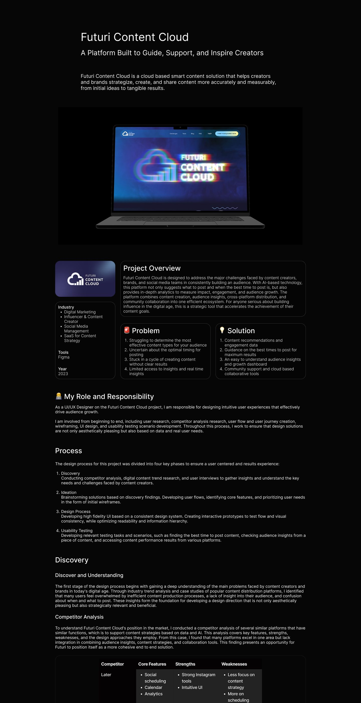
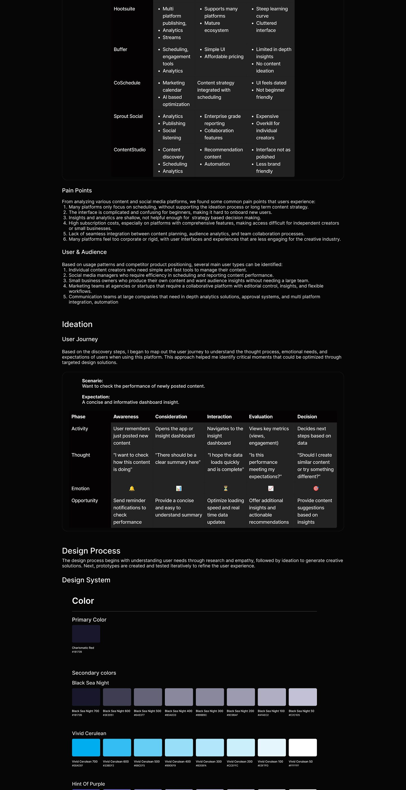
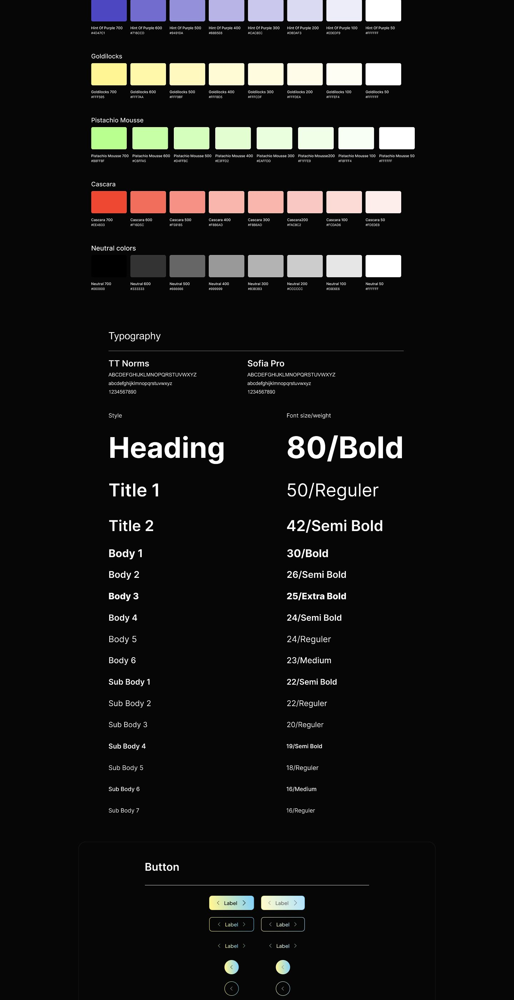
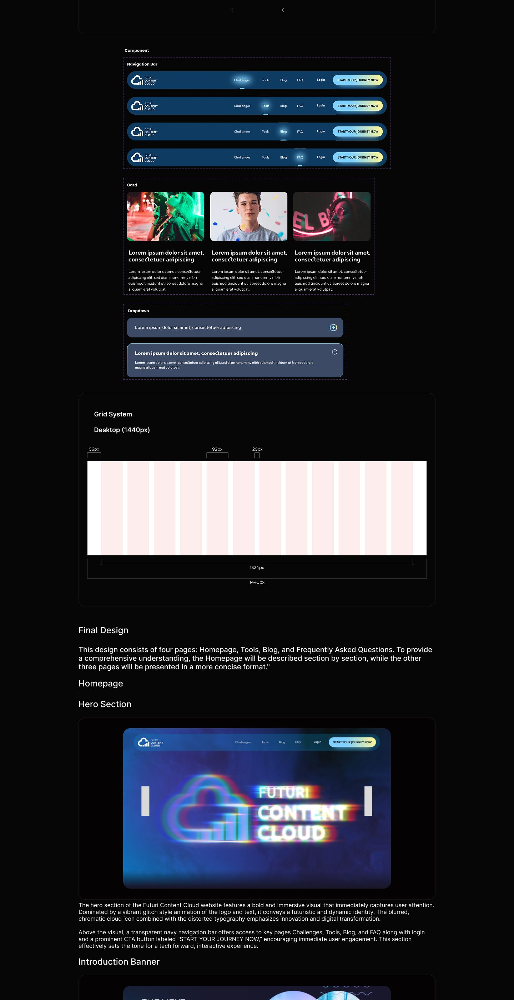
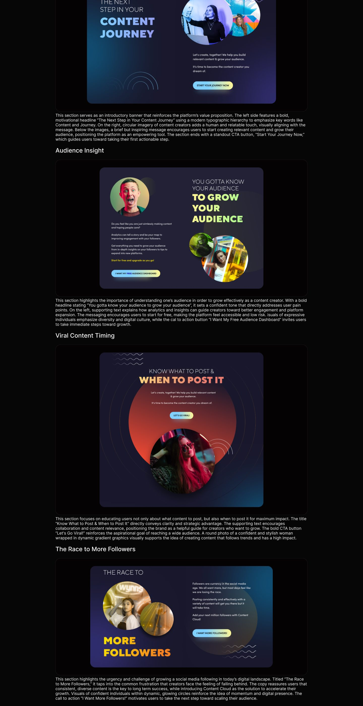
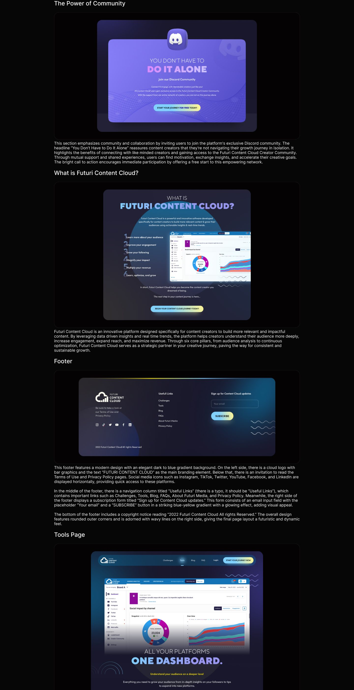
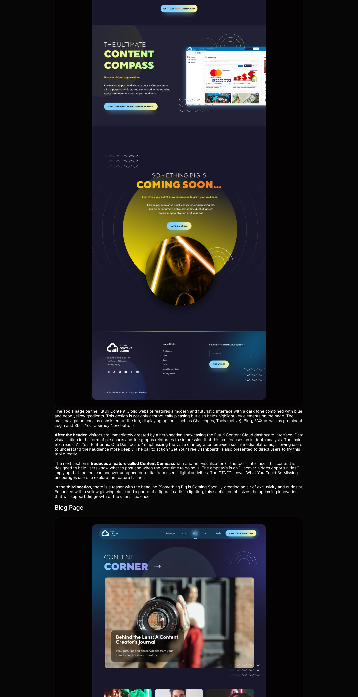
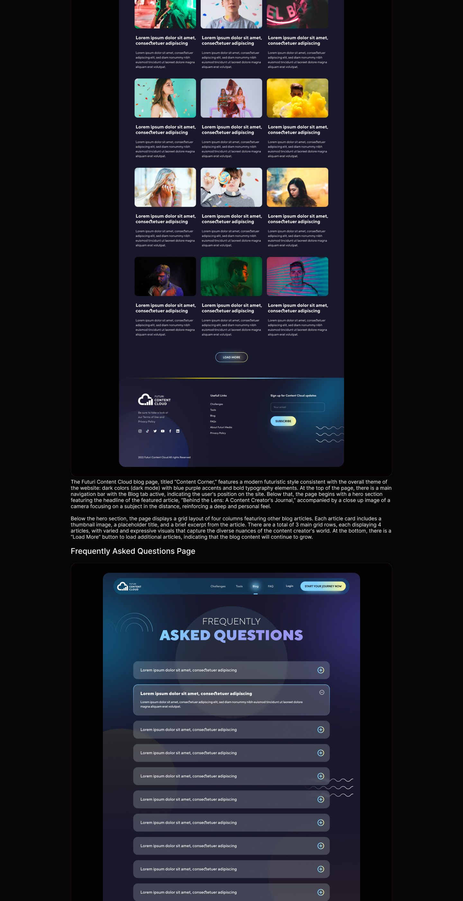
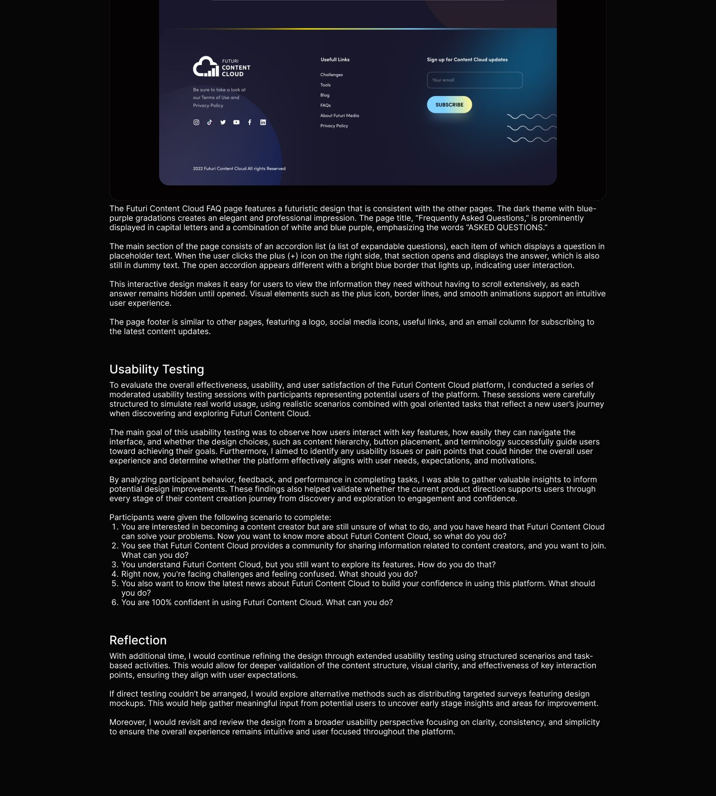

Content platform
Content Cloud
A content platform with a cinematic, deep-navy dark interface.
Overview
Content Cloud is built for browsing: a dark, cinematic interface where the content itself carries the color and the UI stays out of the frame. The case study works through the content journey, from landing pages to discovery and detail views.
It also documents the dark component library behind the screens, including the color, type, and button systems that keep the theme consistent at every level.
Inside the case study
- Competitive research
- User flows
- Landing pages
- Content journey screens
- Dark UI component library
- Annotated design decisions
The case study
The full annotated board: research, flows, explorations, and final screens.








